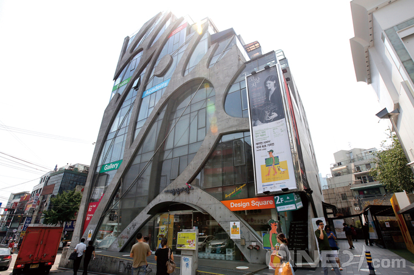

KT&G, 영화사업 재정비 둘러싸고 폐지 의혹 불거져
글 배동미 사진 정용일 2020-10-30
상상마당, 역사 속으로?
KT&G의 영화사업 축소 우려를 두고 ‘재정비’란 주장과 사실상 ‘사업 폐지’라는 주장이 맞서고 있다. KT&G상상마당 관계자는 “KT&G상상마당 영화사업이 종료되기 때문에 사업부 직원 전원의 퇴사를 통보받았다. 27일 KT&G가 발표한 재정비에 대한 내용은 전혀 전달받지 못했다”고 29일 밝혔다. KT&G는 영화사업으로 문화복합공간인 KT&G상상마당 시네마를 운영 중이며, 독립예술영화도 배급하고 있다. 현재 KT&G상상마당 시네마의 영화 상영은 멈춘 상태이며, 공연 공간인 라이브홀도 휴관 중이어서 사실상 폐지 수순을 밟고 있는 게 아니냐는 의혹이 일고 있다. 관계자에 따르면 KT&G 영화사업으로 배급과 극장 운영을 담당하는 직원 8인 모두 올해 안으로 퇴사 절차를 밟게 될 예정이다. 13년 동안 상상마당 시네마에서 일한 노동자도 있는데, 한순간에 일자리를 잃게 될 형국이다.
코로나19로 인한 경영 악화로 KT&G 영화사업이 폐지된다는 소식이 SNS를 통해 퍼지자 10월 27일 폐지 반대 서명 운동이 일어났다. KT&G 배급을 통해 작품을 개봉했던 강유가람, 김경묵, 김보람, 김종관, 신연식, 연상호, 이길보라 감독 등 18인은 “KT&G상상마당 시네마와 영화사업부를 지켜달라”고 호소했다.
이들은 11월 1일까지 KT&G상상마당 시네마 폐지 반대 서명을 받고 있다. KT&G 문화공헌부는 폐지 반대 서명 운동이 시작된 27일, “KT&G상상마당 시네마는 문을 닫지 않는다”는 내용의 공지를 발표했다. KT&G측은 “독립예술영화를 여전히 사랑하고 응원하는 많은 관객을 위해 KT&G상상마당 시네마는 어떻게 하면 더 좋은 공간과 콘텐츠로 지원할 수 있을지 고민하고 있으며, 이러한 재정비 차원에서 공간을 임시 중단한 상태”라고 밝혔다. 그러나 KT&G상상마당 관계자는 “공지가 올라온 후 폐지가 아닌 재정비란 주장을 알게 됐다. 그럼에도 재정비에 관해 현 직원들은 전혀 모르는 상황”이라고 말했다. 이와 관련해 KT&G측은 “운영 중단 등의 말은 전혀 사실이 아니다” 라면서도 “인력 운용을 포함한 상상마당 운영 전반에 대해서는 파트너십을 맺은 문화 전문 운영 대행사가 진행하고 있다”고 선을 그었다. KT&G측의 공식 입장이 무색하게 영화사업 폐지 수순을 밟는 듯한 상황이라 영화 팬들의 관심이 절실해 보인다.